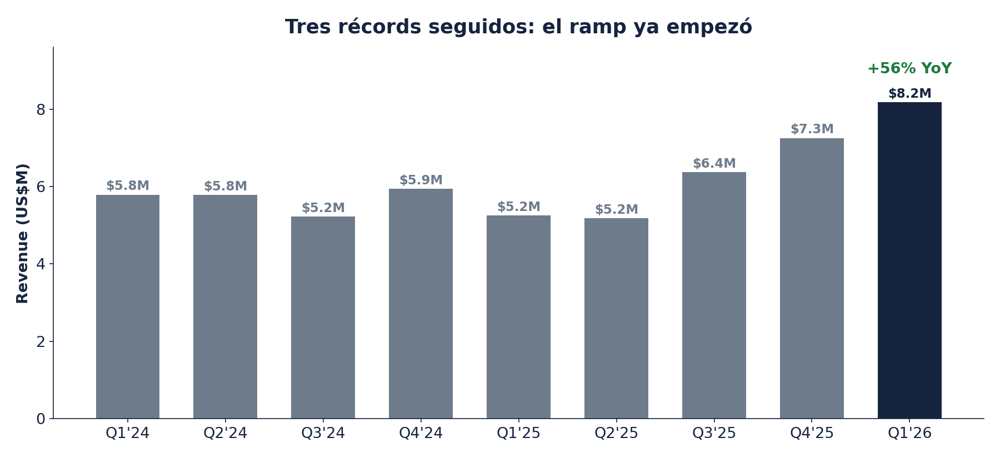
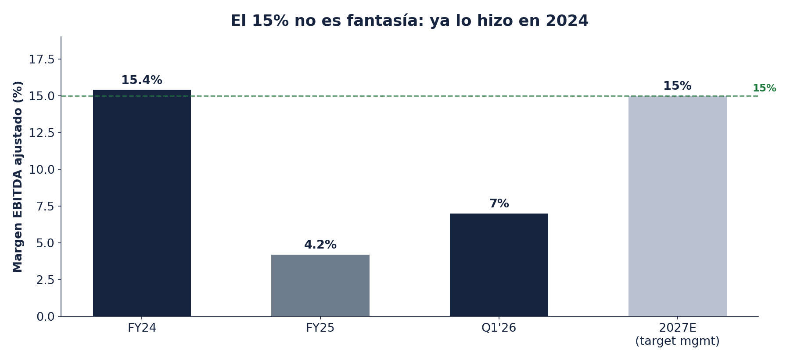
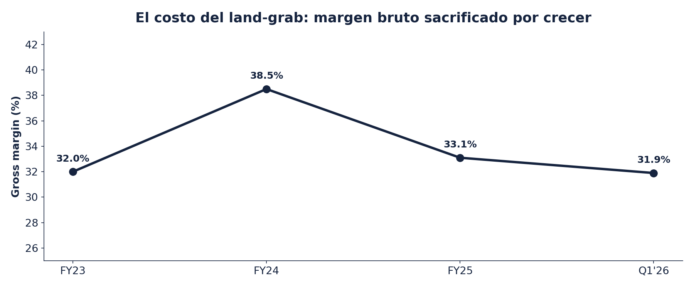
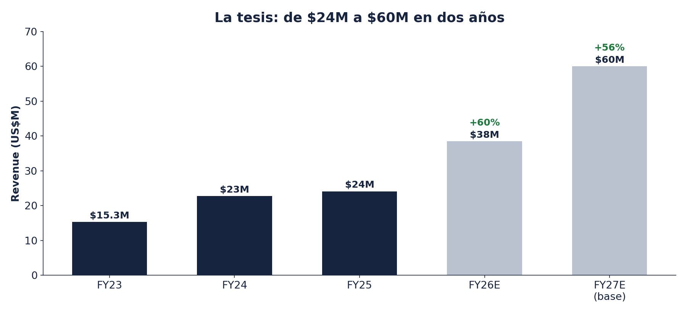
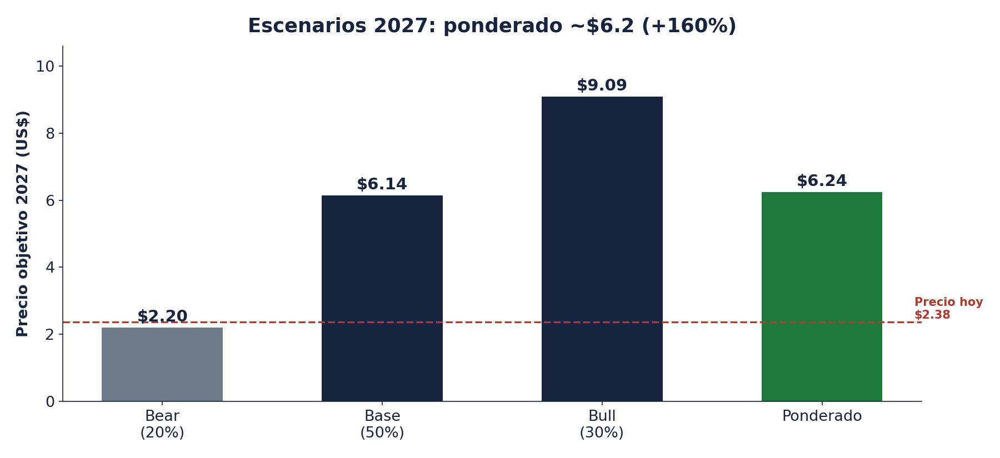

La oportunidad, en una página
KLNG cotiza a $2.38 con un market cap de ~$29M. Mi precio objetivo ponderado para 2027 es de cerca de $6.2, como +160% desde aquí, con un rango de tesis de $6-8 y un bull case de $10+.
Lo que te llevas por ese precio: una empresa de ingeniería submarina con casi 30 años de expertise en umbilicals — los "nervios" que conectan la plataforma con los pozos en el fondo del mar — que acaba de encadenar tres trimestres récord seguidos, creció +56% en el Q1, opera sin deuda financiera, y está armando dos patas nuevas de revenue que el mercado todavía no paga: una flota de equipo en renta con ingresos recurrentes y una operación en Brasil que acaba de convertir su primer contrato. Todo esto con el petróleo arriba de $90 y el gasto offshore en pleno despertar.
El mercado la ve como lo que era: una microcap OTC ilíquida que venía de años de pérdidas. Los datos dicen otra cosa, y el gap entre las dos historias es la oportunidad.
Snapshot
| Métrica | Valor | Nota |
|---|---|---|
| Precio (28-jul-2026) | $2.38 | 52 semanas: $1.12-$3.06 |
| Market cap / EV | ~$29.0M / ~$27.9M | 12.2M acciones; EV/Sales TTM ~1.0x |
| Revenue Q1 2026 | $8.2M (+56% YoY) | Tercer trimestre récord consecutivo |
| Margen EBITDA ajustado Q1 | 7.0% ($572K) | El KPI árbitro de la tesis; target 15% en 2027 |
| Deuda financiera (3/31/26) | Prácticamente cero | Solo leasing; revolver de $5M disponible (may-2026) |
| Net income Q1 2026 | $241K ($0.02/sh) | De vuelta a utilidad tras el año de inversión 2025 |
| Clientes | Top-2 = 40% del revenue FY25 | Cohorte nueva de 2025 ya aporta ~25% del Q1 |
| Próximo juez | Q2 2026 (~mediados de agosto) | Margen, revolver dispuesto, carruseles |
Fuentes: 10-Q Q1-2026 y 10-K FY2025 (SEC EDGAR, CIK 1110607); Adj EBITDA según press releases de la compañía; precio de mercado del 28-jul-2026.
1. ¿Qué hace la empresa?
KOIL Energy diseña, fabrica y da servicio a equipo crítico para producción de petróleo y gas en aguas profundas: umbilicals, flying leads, sistemas de distribución subsea y equipo de handling y spooling (carruseles). Si un operador quiere conectar un pozo nuevo en el fondo del mar a su infraestructura existente — lo que la industria llama un tieback — alguien tiene que fabricar, instalar, terminar y probar esos conectores. Ese alguien, en un nicho donde casi no hay jugadores chicos calificados, es KOIL.
El negocio tiene tres líneas:
- Productos (contratos fixed-price). Manufactura de flying leads, hardware de umbilicals, válvulas de aislamiento y ayudas de instalación desde su planta de ~101,000 sq ft en Houston.
- Servicios. Instalación, monitoreo, pre-commissioning, terminaciones y pruebas — en el Golfo de México, West Africa y ahora Brasil. El revenue de servicios creció +45% en 2025.
- Rental equipment (la pata nueva). Renta de equipo especializado como carruseles de 3,400 y 3,500 toneladas para manejo de umbilicals, con almacenamiento de largo plazo del sistema del cliente después del proyecto. Revenue recurrente, márgenes mejores que el negocio legacy, y el mismo activo se monetiza varias veces.
La barrera de entrada es la calificación: los operadores no le dan trabajo de misión crítica en aguas ultra-profundas a cualquiera. Treinta años de historial operando para majors es un activo que no aparece en el balance.
2. De Deep Down a KOIL: por qué estaba barata
Para entender la oportunidad hay que entender por qué nadie la seguía. La empresa se fundó en 1997 como Deep Down, Inc. y pasó años como una microcap OTC más del montón:
- Años de irrelevancia. Revenue estancado, pérdidas recurrentes ($1.6M de pérdida neta todavía en 2023) y cero cobertura de analistas.
- El rebrand. En 2022 la empresa se renombró KOIL Energy Solutions (el ticker pasó de DPDW a KLNG), pero el nombre nuevo tardó en venir acompañado de resultados nuevos: el giro real llegó con el cambio de liderazgo en 2024.
- El estigma OTC. Sin listing en bolsa mayor, sin analistas, sin institucionales — el tipo de acción que solo encuentra quien la busca.
3. El giro: Erik Wiik y KOIL 2030
El punto de inflexión tiene nombre y fecha:
- Nuevo CEO con pedigrí subsea. Erik Wiik tomó el timón el 1 de abril de 2024, después de 24 años en Aker Solutions — uno de los gigantes de tecnología subsea del mundo. Venía asesorando a la empresa desde septiembre de 2023: conocía exactamente lo que compraba.
- Resultados inmediatos. Su primer año (2024): revenue +48% a $22.7M, EBITDA ajustado de $3.5M (margen ~15%) y utilidad neta de $2.6M ($0.21 por acción).
- 2025: el año de sembrar. En lugar de cosechar, Wiik reinvirtió el P&L completo en crecimiento: abrió una base de 180,000 sq ft en Macaé, Brasil (feb-2025), expandió ventas internacionales, desarrolló IP propia y armó la flota de renta. El EBITDA bajó a ~$1M y el año cerró prácticamente en breakeven. El mercado lo leyó como retroceso; era inversión.
- KOIL 2030. En el investor day de mayo 2026 en Houston (más de 100 inversores, durante la Offshore Technology Conference), management presentó su roadmap con tres pilares: convertirse en proveedor de sistemas integrados, expansión en Brasil, y rental equipment. Los tres ya tienen evidencia en contratos firmados.
4. La tesis: tres motores y una palanca
El mercado ve una microcap OTC que apenas gana dinero. Yo veo una plataforma subsea con tres motores de revenue prendiéndose al mismo tiempo, un ciclo offshore estructural detrás, y el margen EBITDA como única variable que falta por confirmar.
Pilar 1: la inflexión ya está en los números
No es una historia de esperanza. El Q1 2026 hizo $8.2M de revenue, +56% contra el año pasado y +13% secuencial — el tercer trimestre récord consecutivo. El run-rate anualizado ya es ~$33M contra $24M de todo 2025. Y la calidad del crecimiento mejoró: los clientes nuevos que la empresa sumó en 2025 (10% del revenue de ese año) ya aportaron ~25% del revenue del Q1. La base de clientes se está ensanchando exactamente cuando el ciclo se acelera.

Revenue trimestral. Fuente: XBRL de SEC EDGAR (CIK 1110607); Q4 derivado de FY menos nueve meses.
Pilar 2: rental fleet — el activo que se paga varias veces
La secuencia de mayo-junio 2026 es la tesis en miniatura, ejecutada en menos de un mes:
- 22 de mayo: firma un revolver asset-based de $5M con nFusion Capital que reemplaza (y termina) el factoring anterior. El CFO Kurt Keller lo etiquetó explícitamente para "la expansión de nuestra oferta de rental equipment de alto margen".
- 11 de junio: anuncia un award mayor de handling, spooling y almacenamiento de umbilicals que requiere dos carruseles: uno nuevo modular de 3,500 toneladas recién adquirido — ya con su primer contrato antes de estar ocioso un solo trimestre — y uno existente que estaba subutilizado en la flota. Ejecución en H2 2026, seguida de almacenamiento de largo plazo del sistema del cliente: revenue recurrente.
- 1 de julio: mobilización para el proyecto offshore. Capital → activo → contrato, sin pausa.
El CEO lo llamó "pivotal moment", y la lectura es difícil de discutir: la estrategia de rental fleet ya no es un plan, está pasando. La renta convierte hardware que se vendía una vez en un activo que genera ingresos proyecto tras proyecto, más almacenamiento entre proyectos. Es el cambio de mix que sube la calidad del negocio completo.
Y hay una historia detrás de ese carrusel de 3,500 toneladas que pinta de cuerpo entero al management. Según un analista con acceso al management (comunidad privada de research, por eso no puedo compartir la fuente), el equipo costó ~$5M nuevo hace tres años: lo compró un cliente de energía eólica cuyo proyecto se frenó en seco. Primero se lo ofrecieron a KOIL en venta y Wiik dijo que no — pedían casi el precio de nuevo. Semanas después la conversación cambió a "¿te lo puedes llevar?". KOIL lo desarmó en North Carolina, lo transportó en barcaza a la costa del Golfo y lo re-ensambló: una máquina de 76 metros de largo con tornamesa de 22 metros, capaz de enrollar un umbilical de 72 km, adquirida por una fracción mínima de su valor. Hoy está probada y con contrato.
El mismo analista estima el day rate de renta en $10-20K por día, con contratos típicos de 1 a 3 meses — es decir, del orden de $1-2M por campaña por carrusel, sobre un activo que costó casi nada, más el almacenamiento entre proyectos. Son cifras de terceros, no guía oficial, así que no las meto al modelo; pero explican por qué management insiste en que la renta es el motor de margen del negocio: revenue sobre un activo a costo ~cero cae casi directo a EBITDA.
Pilar 3: Brasil — la segunda curva S
Brasil es uno de los mercados deepwater más grandes del mundo y KOIL lleva desde febrero de 2025 pagando la entrada: una base de 180,000 sq ft en Macaé, el hub de la cuenca de Campos, enfocada en ingeniería, manufactura y pruebas de cable management, umbilicals y flexible pipes. Durante un año eso fue puro costo — parte de por qué los márgenes de 2025 se vieron feos.
El 22 de julio de 2026 llegó la primera cosecha: el primer contrato significativo en Brasil, una campaña de mantenimiento de umbilicals (re-terminación y pruebas de elementos de inyección química, control hidráulico y cables eléctricos) con campaña offshore arrancando en Q4 2026. La empresa espera más oportunidades con el mismo operador y en todo el mercado brasileño al completarla. Matiz importante: es un contrato de mantenimiento, no el award grande de manufactura — ese sigue pendiente, y research de terceros (Byron Street) detectó en abril un embarque récord de 30.4 toneladas de tubing de acero inoxidable que apunta a algo mayor cocinándose. Yo lo dejo fuera del modelo: si llega, es kicker.
Pilar 4: apalancamiento operativo — el 15% no es fantasía
Aquí vive el debate central de la acción. El margen EBITDA fue ~15% en 2024, colapsó a ~4% en 2025 por la ola de inversión, y en Q1 2026 va de regreso: 7%. El target de management para 2027 es 15% — es decir, volver a donde ya estuvo, pero con más del doble de revenue. El SG&A del Q1 subió $611K contra el año pasado por headcount, pero la empresa señaló que parte del aumento secuencial fue no recurrente (auditoría de cierre de año y marketing).

Margen EBITDA ajustado según press releases de la compañía. 2027E = target de management (roadmap KOIL 2030).
El margen bruto cuenta la misma historia desde otro ángulo: 38.5% en 2024, 33% en 2025, 32% en Q1 2026. La compresión es el costo del land-grab — precios agresivos para entrar a mercados nuevos más costos de arranque de Brasil corriendo por el P&L. La apuesta de la tesis es que con la base instalada ya pagada, el revenue incremental de 2026-2027 cae con margen incremental mucho más alto. El Q1 ya dio la primera señal: revenue +56% con utilidad operativa positiva. Y la flota de renta empuja en la misma dirección: como vimos en el Pilar 2, es revenue sobre activos adquiridos casi gratis, con margen incremental muy superior al mix actual.

Gross margin anual. FY23 según comentario del call de resultados; FY24-Q1'26 calculado de filings SEC.
Pilar 5: balance limpio y sin dilución
- Deuda financiera prácticamente cero. Al 31 de marzo: $8K de factoring (ya terminado) y $47K de leases financieros. Lo demás es leasing operativo de las instalaciones.
- Revolver de $5M sin usar al cierre del Q1. Disponibilidad contra 85% de cuentas por cobrar — capacidad para tomar contratos más grandes sin levantar capital.
- Dilución mínima. De 12.09M a 12.20M acciones en un año: +0.9%. En microcaps OTC eso es oro.
- El punto débil: caja de $1.2M. El crecimiento se come el working capital (las cuentas por cobrar subieron $2.7M en el trimestre). El flujo operativo del Q1 fue positivo (+$414K), pero el colchón es delgado — por eso existe el revolver.
5. La cadencia de contratos 2026
El KPI de "new contract wins" no ha parado en todo el año:
| Fecha | Evento | Por qué importa |
|---|---|---|
| 06-ene | Contrato significativo de fabricación | Arranca el año con backlog de producto |
| 12-ene | Sistema integrado de distribución subsea, petrolera de EE.UU. (Gulf of America) | Avance hacia proveedor de sistemas integrados (pilar 1 de KOIL 2030) |
| 11-mar | Instalación y pre-commissioning de umbilicals, West Africa | Expansión internacional; mobilización H2 2026 |
| 15-may | Q1 2026: $8.2M revenue (+56%), $241K utilidad | La inflexión, en números |
| 22-may | Revolver $5M con nFusion Capital | Termina el factoring; financia rental fleet |
| 11-jun | Award mayor: dos carruseles (3,500t nuevo + uno redeployed) | La estrategia rental validada; storage recurrente post-proyecto |
| 01-jul | Mobilización del proyecto de carruseles | Capital → activo → contrato en 6 semanas |
| 22-jul | Primer contrato significativo en Brasil (mantenimiento de umbilicals) | Macaé convierte a revenue; campaña Q4 2026 |
Fuentes: press releases de la compañía (GlobeNewswire), 8-K del 11-jun-2026 (SEC), PR Brasil del 22-jul-2026.
6. Los números y el modelo
Construí el modelo directo de los filings. La foto anual con el Q1 real:
| US$ miles | FY2023 | FY2024 | FY2025 | Q1 2026 |
|---|---|---|---|---|
| Revenue | 15,343 | 22,734 | 24,051 | 8,174 |
| Crecimiento | — | +48% | +6% | +56% YoY |
| Gross margin | ~32% | 38.5% | 33.1% | 31.9% |
| SG&A | — | 6,192 | 8,326 | 2,338 |
| Adj EBITDA (margen) | — | 3,500 (15.4%) | ~1,000 (4.2%) | 572 (7.0%) |
| Net income | (1,554) | 2,620 | (38) | 241 |
Fuente: 10-K FY2025 y 10-Q Q1-2026 (SEC EDGAR); Adj EBITDA según press releases. FY23 desglose parcial.
Mi proyección 2026: los tres trimestres que faltan suben en escalera ($8.8M, $10M, $11.5M) conforme entran carruseles, West Africa y el arranque de Brasil — FY2026E ~$38.5M (+60%). Para 2027 uso $60M como base: el punto bajo del rango que implica el roadmap de management. De $24M a $60M en dos años suena agresivo hasta que ves que el Q1 ya corre a $33M anualizado antes de que ninguno de los awards de 2026 contribuya de lleno.

FY26E y FY27E son estimados propios (barras claras).
7. Valuación
Valúo con EV/EBITDA porque es como se valúa esta industria y porque el EPS todavía trae poco que multiplicar. Tres escenarios a 2027, ponderados por probabilidad:
| Escenario | Rev 2027E | Margen | EBITDA | Múltiplo | Precio obj. | Prob. |
|---|---|---|---|---|---|---|
| Bear — crece pero no escala margen | $40M | 10% | $4.0M | 7x | $2.20 | 20% |
| Base — ejecuta el roadmap | $60M | 13% | $7.8M | 10x | $6.14 | 50% |
| Bull — target completo de mgmt | $70M | 15% | $10.5M | 11x | $9.09 | 30% |
| Ponderado | ~$6.24 (+160%) | 100% |
Precio objetivo = EV / 12.7M acciones diluidas, asumiendo deuda neta ~0 en 2027.

El bear (~$2.20) queda pegado al precio actual: a $2.38 el mercado solo está pagando el escenario donde el margen nunca escala.
Eso es lo que más me gusta del setup: el downside del escenario malo ya está más o menos en el precio, y el rango $6-8 de la tesis no requiere heroísmo — requiere que el margen regrese a donde ya estuvo en 2024, con el revenue que los contratos firmados ya hacen visible. ¿Por qué existe el descuento? Sin cobertura de analistas, listing OTC, historial de década perdida, y un 2025 que en la superficie parece un retroceso. Cada uno de esos factores es temporal; ninguno es estructural.
El viento de cola no lo pago pero lo anoto: el petróleo pasó de ~$55 a la zona de $90-100 en meses, los campos deepwater declinan ~7% anual forzando desarrollo nuevo, y los subsea tree awards — que correlacionan con las ventas de producto de KOIL — se esperan +20% en 2026 (247 → 296). Los tiebacks, el core de KOIL, son la vía rápida favorita de los operadores: first oil en ~2 años del FID.
8. Checklist Micro Capo: 7 / 10
| Criterio | Score | Nota |
|---|---|---|
| Historia operativa | 7 | Desde 1997; ~30 años de expertise subsea |
| Modelo de negocio simple | 7 | Fabrica, instala, renta; se entiende en una línea |
| Nicho / posición competitiva | 7 | Casi único jugador chico calificado en umbilicals |
| Management | 8 | Wiik: 24 años en Aker Solutions; ejecución visible desde 2024 |
| Alineación / insiders | 5 | Sin dato duro de ownership; sin red flags |
| Crecimiento de revenue | 7 | +48% FY24, +6% FY25 (inversión), +56% Q1-26 |
| Rentabilidad y márgenes | 5 | EBITDA 7%; el gap al 15% ES la tesis |
| Balance | 7 | Sin deuda financiera; caja delgada ($1.2M) |
| Dilución | 8 | +0.9% en un año |
| Mecánica multibagger | 8 | Operating leverage + rental recurrente + Brasil |
Clasificación: transición de valor a calidad — turnaround en ejecución con opcionalidad de Brasil y rental fleet.
9. Catalizadores
- Q2 2026 (~mediados de agosto). El siguiente juez. Busco: margen EBITDA arriba del 7%, cuánto quedó dispuesto del revolver por el capex del carrusel, y primera contribución de los awards.
- H2 2026: conversión de carruseles y West Africa. Los dos proyectos mobilizan en el semestre; deben verse en revenue de Q3-Q4.
- Q4 2026: primera campaña offshore en Brasil. El primer revenue brasileño de la historia de la empresa, y la puerta a más trabajo con el mismo operador.
- El award grande de manufactura de Brasil. Si el embarque de tubing que detectó research de terceros se convierte en contrato, es upside no modelado.
- Cuantificación del backlog. La empresa aún no publica cifra de backlog; el día que lo haga (o que dé guidance), la historia se vuelve legible para más inversores.
10. Riesgos
- Ejecución de margen — el riesgo #1. La tesis vive y muere con el 7% → 15%. Si el mix rental/servicios no escala o el SG&A sigue subiendo, el bear case de $2.20 es el techo, no el piso.
- Awards sin monto divulgado. Ni el de carruseles ni el de Brasil publicaron valor de contrato. El mercado ya devolvió el spike de junio ($2.65 → $2.38) esperando ver números en el Q2.
- Caja delgada y working capital. Caja de $1.2M con AR creciendo $2.7M por trimestre. Vigilar la disposición del revolver y el costo de intereses en el 10-Q.
- Concentración de clientes. Top-2 = 40% del revenue FY25. Mejorando (la cohorte nueva ya es ~25% del Q1), pero un cliente grande que se atrase mueve el trimestre.
- Ciclo del petróleo. Con crudo abajo de $60 los FIDs se pausan y el backlog deja de convertir. Hoy el viento sopla a favor; no siempre lo hará.
- Iliquidez OTC. Entrar es fácil; salir con tamaño, no. Es una posición que se dimensiona sabiendo eso.
11. Por qué la tengo
Esta posición tiene una confesión incluida: la vendí a ~$2.09 a principios de junio porque el credit facility de mayo todavía no se traducía en nada tangible. Nueve días después la empresa anunció que el facility ya había financiado un carrusel nuevo y que ese carrusel ya tenía su primer contrato. Re-entré a ~$2.46: pagué ~18% más por la evidencia, y lo doy por bien pagado. La secuencia capital → activo → contrato en menos de un mes es exactamente lo que quería ver antes de comprometerme.
Me quedo porque el setup es asimétrico: el escenario malo vale más o menos lo que pago hoy, y el escenario base — que solo requiere que el margen regrese a niveles que la empresa ya demostró en 2024 — vale ~2.5x. Mientras tanto, cada seis semanas cae un contrato nuevo que confirma la cadencia. El árbitro es el margen EBITDA, y lo reviso trimestre a trimestre.
Bottom line
El mercado está valuando a KOIL como si 2025 fuera su techo, cuando 2025 fue el año en que pagó por adelantado el crecimiento de 2026-2027. A ~1x ventas y con el bear case pegado al precio actual, el downside está acotado y el upside no depende de estirar múltiplos: depende de que una empresa que ya fue 15% de margen EBITDA vuelva a serlo con el doble de revenue.
Fuentes
- 10-K FY2025 y 10-Q Q1-2026, SEC EDGAR (CIK 1110607) · 8-K award de carruseles (11-jun-2026)
- Press releases GlobeNewswire: Q1 2026 (15-may), credit facility (22-may), carruseles (11-jun), Brasil (22-jul) · CEO transition PR (mar-2024)
- Research de terceros en comunidad privada de microcaps (jun-jul 2026, no compartible)
- Precio de mercado al 28-jul-2026
Aviso legal. El contenido publicado por The Micro Capo y por Rodrigo Lezama en cualquier formato es únicamente mi opinión personal con fines educativos, informativos y de entretenimiento. No constituye, en ningún caso, asesoría financiera, fiscal, legal, contable ni de inversión personalizada. No es una recomendación de compra, venta o mantenimiento de ningún valor. Las inversiones en mercados públicos, especialmente en empresas de baja capitalización (microcaps), conllevan riesgos significativos: los precios pueden subir o bajar, y existe la posibilidad real de perder parte o la totalidad del capital invertido. El autor tiene posición en KLNG, y dicha posición puede cambiar sin previo aviso. Cada lector es el único responsable de sus propias decisiones de inversión. Antes de invertir, consulta con un asesor financiero debidamente certificado en tu jurisdicción.